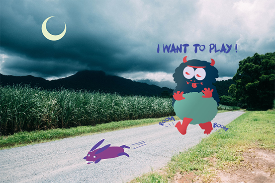

Here I created a friendly child like monster who is looking to have some fun.
He finds a bunny he wants to play with but the bunny is terrified. It was difficult in
the beginning to get the hang of the pen tool. I still need practice to get those smooth clean
curves.But it is really useful to have something that can be used for unlimited scaling.